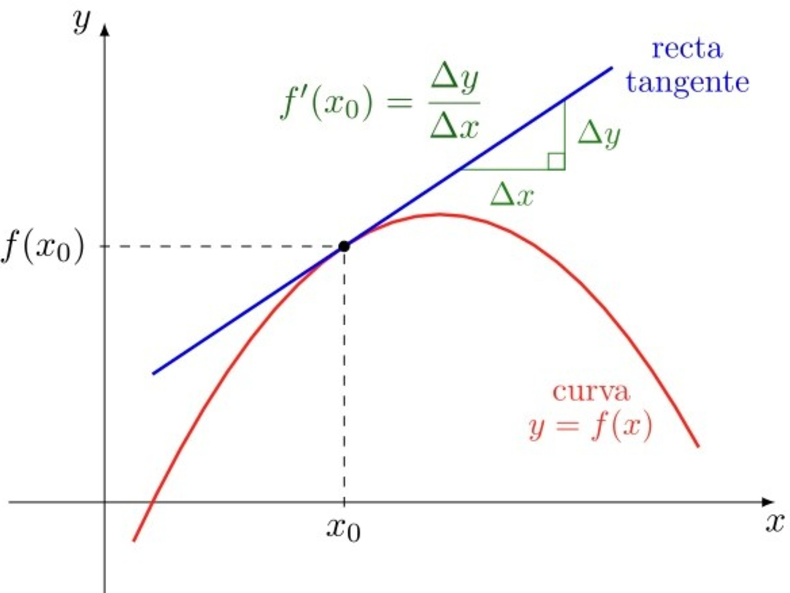

Las derivadas son un concepto fundamental en el cálculo diferencial, utilizado para medir la tasa de cambio de una función con respecto a una variable. Se aplican en múltiples áreas como la física, economía, ingeniería y machine learning.
La derivada de una función \( f(x) \) en un punto \( x \) se define como el límite del cociente de diferencias cuando el incremento en \( x \) tiende a cero:
Si este límite existe, se dice que la función es **diferenciable** en \( x \).
Para calcular derivadas de manera eficiente, se utilizan reglas como:
Calculemos la derivada de \( f(x) = x^3 - 5x^2 + 3x - 7 \):
f'(x) = 3x² - 10x + 3Podemos utilizar la biblioteca sympy para calcular derivadas en Python:
import sympy as sp
x = sp.Symbol('x')
f = x**3 - 5*x**2 + 3*x - 7
derivada = sp.diff(f, x)
print(derivada)
Salida en consola:
3*x**2 - 10*x + 3También podemos calcular derivadas en R con la función D():
# Definir la función en R
f <- expression(x^3 - 5*x^2 + 3*x - 7)
# Calcular la derivada
D(f, "x")
Salida en consola:
3 * x^2 - 10 * x + 3Además de las reglas básicas, existen reglas avanzadas que nos permiten derivar funciones más complejas.
Cuando una función depende de múltiples variables, se utilizan las derivadas parciales para medir el cambio con respecto a una de ellas, manteniendo las demás constantes.
La derivada parcial de una función \( f(x,y) \) respecto a \( x \) se denota como:
\[ \frac{\partial f}{\partial x} = \lim\limits_{h \to 0} \frac{f(x+h, y) - f(x, y)}{h} \]Si \( f(x, y) = x^2y + 3xy^2 \), sus derivadas parciales son:
La derivada doble se obtiene aplicando la derivación dos veces a una función.
Para una función de una sola variable \( f(x) \), la derivada segunda se expresa como:
\[ f''(x) = \frac{d^2 f}{dx^2} \]En funciones de varias variables, se pueden calcular derivadas parciales segundas:
La derivada representa la pendiente de la recta tangente a una curva en un punto. En funciones de varias variables: